概述
| 业务逻辑的整理来源：《yinlife官网系统》 |
本文是产品知识库（RAG）+ AI 产品顾问的规范设计与实现说明，面向后续整合与二次开发。
核心代码：
数据访问（服务端）：
src/lib/server/products.js数据访问（客户端适配）：
src/lib/products.js写入口：
src/routes/api/products/+server.js向量服务：
src/lib/server/embed.js（server-only，见 §4.1）连库层：
src/lib/server/db.tsAI 工具与对话：
src/routes/api/test-vercel-api-chat/+server.js自检 / 回填脚本：
scripts/check-product-search.mjs、scripts/backfill-product-embeddings.mjs
设计结构图
下图是这套「产品 RAG 知识库 + AI 顾问」的系统结构：谁调用谁、数据怎么流动、向量从哪来。三条访问路径最终都汇聚到 $lib/server/products.js 这唯一一份实现。

1. 概览
产品是 SurrealDB product 表中的独立记录。整条链路分三层，边界如下：
┌──────────────────────────────────────────────────────────┐
浏览器 / 编辑器 │ $lib/products.js ──HTTP──> /api/products ──> │
（客户端） │ （Bearer 鉴权，写操作记审计日志） │
└──────────────────────────────────────────────────────────┘
│
$lib/server/products.js ──> SurrealDB
▲
┌───────────────────────────────────┴───────────────────────┐
服务端 │ ① 页面 load / SSG entries │
（同进程直接 import）│ +page.server.ts / +layout.server.js │
无 HTTP、无鉴权 │ └─ import $lib/server/products.js ── getAllProducts() │
无序列化 │ ② AI 工具 getProducts │
│ chat 端点的 streamText tools 内 │
│ └─ import $lib/server/products.js ── searchProducts() │
└───────────────────────────────────────────────────────────┘
三条访问路径的差别：
| 路径 | 形态 | 调用方 → 被调用方 | 鉴权 / 序列化 |
|---|---|---|---|
浏览器 / 编辑器 |
跨进程 HTTP |
浏览器里的 |
有 Bearer 鉴权，JSON 序列化 |
页面 |
同进程函数调用 |
|
无 |
AI 工具 |
同进程函数调用 |
|
无 |
「同进程函数调用」指的是同一个 Node.js 进程（即 SvelteKit 服务端进程）里的普通内存函数调用：
-
页面 load：
import { getAllProducts } from '$lib/server/products'后直接await getAllProducts()，拿到 JS 数组。 -
AI 工具：
import { searchProducts } from '$lib/server/products'后在execute里await searchProducts({ query, … })。
这两条是服务端模块间的直接 import，不是又走一遍 HTTP；没有网络往返、没有鉴权、没有序列化，拿到的是内存里的对象。它们与浏览器路径共享同一份 $lib/server/products.js，因此读写逻辑只有一份实现，不会出现「页面一份 SQL、接口一份 SQL」的分叉。
连库由 src/lib/server/db.ts 的 safeQuery() 统一管理。$lib/server/ 下的模块不会被打进浏览器产物，凭据与 SDK 不外泄。
2. 数据模型
product 表存的是公司研发中心「产品中心」对外展示的医疗产品，一条记录就是一个产品。
产品分两类——research（在研）和 approved（已获批），后者带注册证号（regNumber）。
每条记录包含产品标题、简介、详细描述、核心优势、适用场景（scope）、结构、使用场景等文字信息，以及详情页富文本正文（content）和配图。
AI 产品顾问回答「有哪些产品」「某症状该用什么产品」「某注册证号对应什么」时，检索的就是这张表。
2.1 表与 schema
product 表是 SCHEMALESS。SurrealDB 的 SCHEMALESS 意味着：
-
表不需要
DEFINE TABLE预先创建，第一次UPSERT/CREATE写入时自动建表； -
记录可以包含任意字段，没预先声明的字段也能直接写；
-
DEFINE FIELD只是给个别字段加类型 / 约束，并不改变表「其他字段随便写」的开放特性。
所以本项目不写 DEFINE TABLE，全表只有一个字段约束：
DEFINE FIELD embedding ON product TYPE option<array<float>>;array<float> 不锁维度，1024 / 1536 维都能用；只有 HNSW 索引的 DIMENSION 才会锁维度，而本项目不建 HNSW（见 §4.2）。
2.2 字段分层
| 层次 | 字段 | 说明 |
|---|---|---|
业务可写 |
|
只接受这些字段的外部写入； |
内部维护 |
|
由服务端生成，不接受外部写入 |
列表投影 |
业务字段去掉 |
|
详情投影 |
|
|
模型可见 |
|
由 |
「记账字段」是什么：指系统为内部管理而维护的元数据，不是产品业务内容——具体是 embeddingModel、embeddingVersion、createdAt、updatedAt（以及用于排序的 sort）。它们记录「这条向量是哪个模型、哪个版本算的、何时建 / 改的」，只供运维排查与版本管理用，对回答用户问题毫无帮助，所以 MODEL_FIELDS 会把它们剔除，不喂给大模型。
type 取 research（在研）或 approved（已获批）；regNumber 是注册证号，用于精确匹配。列表统一按 ORDER BY sort ASC, id ASC 排序，旧数据没有 sort 时自然退化为 id 升序。
对外返回永不包含 embedding：1024 维浮点数组既不该进前端，也不该进大模型上下文。
2.3 id 规则
-
现有记录是连续数字 id（
product:1…product:6），新增取「现有最大数字 id + 1」。 -
编辑器新增的草稿用负数占位 id（
-Date.now()），由服务端换成真实 id。 -
normalizeId()把RecordId对象 /"product:1"/1归一成同一种值；只有纯数字串才转number，避免"1e3"、"Infinity"、" 12 "被Number()悄悄转错。
为什么 URL 不会出现随机字符串：SurrealDB 记录 id 可以用 type::rand() 生成 ULID/uuid，那种 id 会出现在 URL 里就是一长串随机字符。本项目刻意手动分配连续整数 id（product:1、product:2…），因此详情页 URL 形如 /rd-center/product/1，干净且可读、可预判。
为什么数字 id 必须保持 number 类型：SurrealDB 中 type::thing('product', 1) 生成的是数字 id product:1，而 type::thing('product', '1') 生成的是字符串 id product:⟨1⟩——两者在 SurrealDB 里是两条不同记录。
现有记录（1..6）都是数字 id 创建的。若 normalizeId() 把 "1" 归一成字符串，后续查询 type::thing('product', '1') 会对不上已存在的 product:1，导致「查不到旧记录」甚至「误建出重复记录」。因此 normalizeId() 只对纯数字串返回 Number，保证 id 类型稳定。
3. 读写链路
3.1 读取点
| 位置 | 调用 | 用途 |
|---|---|---|
|
|
研发中心列表页注入 |
|
|
详情页正文与上下篇导航 |
|
|
SSG |
|
动态 |
进入编辑模式时重新拉全量 |
|
动态 |
详情页保存后刷新 |
|
|
AI 顾问的 |
服务端 load 直接 import $lib/server/products，浏览器侧只能 import $lib/products（封装 /api/products 请求，另导出两个共享常量：
-
MODEL_FIELDS是喂给模型的字段白名单，MIN_SEARCH_SCORE是语义检索的最低余弦相似度阈值——低于它就算「没匹配上」，详见 §4.2）。 -
RDCenterTemplate把产品列表（templateData.products）与页面配置data（page.metadata.rdcenter）分开维护。
3.2 写入口 /api/products/+server.js
| 方法 | 语义 |
|---|---|
|
列表（ |
|
保存单条， |
|
全量覆盖列表：数组顺序即 |
|
删除单条 |
|
仅更新 |
所有 /api/* 由 src/hooks.server.js 统一校验 Authorization: Bearer，唯一白名单是 /api/admin/login；写操作会记审计日志，target: 'product'。
MERGE 出现的位置（标注）：
-
单条保存
upsertProduct()：
await queryRows(`UPSERT type::thing('product', $id) MERGE $fields`, { id, fields });-
全量覆盖
saveProductList()中，命中的已有记录用MERGE：
await queryRows(`UPDATE type::thing('product', $id) MERGE $fields`, {
id,
fields: { ...fields, embeddingVersion: 0, updatedAt: now }
});而新建记录（负数 id / 列表里新增）用的是 CONTENT $fields（整条写入，等价 CREATE），因为目标 id 一定不存在：
await queryRows(`UPSERT type::thing('product', $id) CONTENT $fields`, { ... });为什么写必须走服务端：upsertProduct() 存完文本要调硅基流动重算 embedding，而 SILICONFLOW_API_KEY 只能存在于服务端（浏览器没有 process.env）。如果浏览器直连数据库保存，文本能存下来，向量却永远停在 embeddingVersion = 0，语义检索随之失效。
为什么用 MERGE 而不是 CONTENT：不会误删未提交的字段，也不会覆盖已有 embedding。但文本一变旧向量就作废，所以更新时显式把 embeddingVersion 打回 0，交给 ensureProductEmbeddings() 重算。
4. 向量与检索
4.1 生成与回填（embedding 服务）
向量服务在 src/lib/server/embed.js，用纯 fetch 调硅基流动的 OpenAI 兼容接口（无新增 SDK 依赖）：模型 BAAI/bge-m3、维度 1024、EMBED_VERSION = 1，密钥来自 SILICONFLOW_API_KEY。
productToEmbedText() 只拼接 title / subtitle / summary / description / coreAdvantages / scope。type / regNumber 是精确过滤字段，不参与语义；content 是 HTML 长文，只用于详情页渲染，不进向量也不喂给模型。
写入顺序是「先存文本、后算向量」：
-
UPSERT … MERGE保存文本； -
基于合并后的完整文本（旧记录 + 新字段）调用
embed()； -
UPDATE写回embedding/embeddingModel/embeddingVersion。
向量生成失败不阻断文本保存，只把 embeddingVersion 置 0。ensureProductEmbeddings() 扫描「向量为空或版本过期」的记录做幂等修复；换 embedding 模型时只需提升 EMBED_VERSION 再全量重算，无需改业务代码。
4.2 混合检索 searchProducts()
命中靠前的分支后不再往下走：
| 优先级 | 条件 | 行为 |
|---|---|---|
1 |
传 |
|
2 |
传 |
|
3 |
无 |
返回全量列表，可按 |
MIN_SEARCH_SCORE = 0.45 的依据：余弦排序永远能凑出 top-k，实测无关问题（问天气、问注册证数量）最高分只有 0.37~0.40，而真实长尾查询（「牙周手术用什么」）能到 0.52。调高会误杀长尾，调低则让无关问题也拿到「看起来像答案」的产品。返回空列表是合法结果，不是错误。
当前不建 HNSW：约 100 条产品的规模下暴力余弦是毫秒级，HNSW 反而会锁定维度、引入近似召回损失和调参成本。等数据量到万级或实测成为瓶颈时再升级。
4.3 AI 工具侧
对话端点用 AI SDK 的 streamText()（模型 @ai-sdk/deepseek 的 deepseek-flash）+ tool() 定义 getProducts 工具，stopWhen: isStepCount(5) 允许多步调用。
getProducts 工具的 toModelProduct() 按 MODEL_FIELDS 裁剪字段，undefined / null / 空字符串 / 空数组一律省略以省 token，语义分支额外保留 3 位小数的 score。
工具描述与系统提示词都写明「返回空列表 = 没有匹配产品」「不得把通用科普说成公司产品」，并要求 count = 0 或最高分过低时明确告知用户暂无对应产品；工具抛错时返回 { count: 0, products: [], error }，不阻断对话。
5. 关键设计决策
| 决策 | 原因 |
|---|---|
产品必须是独立记录，不能是其它表里的嵌套数组 |
SurrealDB 的索引（含 HNSW）检索单元是记录，数组元素无法作为独立结果返回；且嵌套结构无法增量编辑、分页、按 |
写操作走 |
密钥只在服务端 |
|
保护未提交字段与已有向量，同时保证文本变更后旧向量一定失效 |
对外不返回 |
省带宽与 token，避免向量进入前端 / 大模型上下文 |
结构化字段不入向量， |
|
语义检索设阈值 + 空结果约定 |
没有阈值时「今天天气怎么样」也会被模型当成产品答案 |
排序用 |
排序不改变语义内容，重算是纯浪费 |
embedding 服务归为 server-only（放在 |
读 |
|
SvelteKit 只把 |
6. 运维与验证
6.1 环境变量
| 变量 | 用途 |
|---|---|
|
生成 / 查询向量，只能放 |
|
|
|
AI 对话模型 |
|
留资 / 通知邮件 |
⚠️ 环境变量有「两个真源」，容易互相污染（实测结论）：
-
.env文件：hooks.server.js里process.loadEnvFile()加载；脚本用--env-file-if-exists=.env加载。 -
ecosystem.config.cjs（PM2 配置）的env块：生产环境由 PM2 直接注入进程环境变量，里面也硬编码了一套SURREAL_*、SILICONFLOW_API_KEY、DEEPSEEK_API_KEY、SMTP_*。
关键坑在于优先级：Node 的 process.loadEnvFile() 不会覆盖进程里已存在的环境变量（已实测，Node v22）。这意味着：
-
PM2 应用进程：
ecosystem.config.cjs的值先被 PM2 注入，随后.env里的同名变量被loadEnvFile静默忽略。你在服务器上改.env改了个寂寞，生效的永远是ecosystem.config.cjs里那套。 -
shell 里手动跑的脚本（
check:products/backfill）：读不到ecosystem.config.cjs，只认.env。于是同一个 key，在 PM2 应用里和脚本里可能解析成两个不同的值。
结论 / 规则：每个环境只保留*一个真源*。本地开发用 .env；生产用 ecosystem.config.cjs（或平台环境变量），并*不要在服务器上同时留一份内容不同的 .env*。改配置时先确认「这个进程的环境变量到底来自哪」。
6.2 常用命令
package.json 注册了产品检索自检的 npm script：
"check:products": "node --env-file-if-exists=.env scripts/check-product-search.mjs"# 产品混合检索自检（密钥、条数、向量版本、召回分数、字段泄漏）
pnpm check:products
pnpm check:products -- 拔牙后创面怎么护理 预防龋齿
pnpm check:products -- --limit=5
# 幂等回填向量（换模型或出现 stale 记录时）
node --env-file=.env scripts/backfill-product-embeddings.mjs--env-file-if-exists=.env 让没有 .env、只靠平台环境变量的环境也能跑；缺密钥时脚本自己报错并退出码 1。两个脚本全文见附录。
6.3 验证 SQL
SELECT count() FROM product GROUP ALL;
SELECT id, array::len(embedding) AS dim, embeddingModel, embeddingVersion FROM product ORDER BY id;
SELECT count() AS stale FROM product WHERE embedding IS NONE OR embeddingVersion != 1 GROUP ALL;
SELECT id, (content IS NOT NONE) AS has_content FROM product ORDER BY id;stale 应为 0，dim 应为 1024。前端回归看三处：/rd-center 两个 Tab 的产品数与顺序、/rd-center/product/1 正文、BUILD_MODE=ssg npm run build 生成的 product/1..N.html。
6.4 版本约束（踩过的坑）
-
本项目库是
surrealdb/surrealdb:v2.2.1。不要用 3.x 的surreal命令行连库：3.x 已移除type::thing()（改type::record()），会让所有写路径报Invalid function/constant path；升级数据库时需同步替换。 -
定义字段类型用
array<float>，array<f64>在该版本会报Unexpected token F64。 -
动态记录 id 必须写
type::thing('product', $id)，product:$pid不被接受。 -
数字 id 保持
number。
附录 A：scripts/check-product-search.mjs
/**
* 产品混合检索自检
*
* 用途：排查「AI 顾问答不出产品」这类问题——一次性确认
* 1) 运行环境里有没有 SILICONFLOW_API_KEY
* 2) SurrealDB 里产品条数与向量是否就绪
* 3) 语义检索能否召回正确产品（含分数与间距）
* 4) 返回字段有没有泄漏 content / embedding
*
* 运行：
* pnpm check:products
* pnpm check:products -- 拔牙后创面怎么护理 预防龋齿
* pnpm check:products -- --limit=5
*/
import path from 'node:path';
import { fileURLToPath } from 'node:url';
import { createServer } from 'vite';
const projectRoot = path.resolve(path.dirname(fileURLToPath(import.meta.url)), '..');
/** 默认查询：覆盖语义检索 / 类型过滤 / 证号精确三种分支 */
const DEFAULT_QUERIES = ['拔牙后创面怎么护理', '预防龋齿', '3D打印软组织修复材料'];
const DEFAULT_REG_NUMBER = '浙械注准20252171626';
const args = process.argv.slice(2);
let limit = 3;
/** @type {string[]} */
const queries = [];
for (const arg of args) {
if (arg === '--') continue;
const matched = arg.match(/^--limit=(\d+)$/);
if (matched) limit = Math.min(Math.max(Number(matched[1]), 1), 20);
else queries.push(arg);
}
const finalQueries = queries.length > 0 ? queries : DEFAULT_QUERIES;
const pad = (text, width) => String(text).padEnd(width);
/** 累计失败项，最后决定退出码 */
const failures = [];
/* ------------------------------ 1. 环境检查 ------------------------------ */
console.log('== 环境检查 ==');
const apiKey = process.env.SILICONFLOW_API_KEY;
if (apiKey) {
console.log(`SILICONFLOW_API_KEY: ✓ (${apiKey.length} 字符)`);
} else {
failures.push('缺少 SILICONFLOW_API_KEY（.env 未加载或未配置）');
console.log('SILICONFLOW_API_KEY: ✗ 未设置');
}
/* --------------------------- 2~4. 走真实检索层 --------------------------- */
const server = await createServer({
root: projectRoot,
configFile: path.join(projectRoot, 'vite.config.ts'),
logLevel: 'error',
server: { middlewareMode: true }
});
try {
const { searchProducts, getAllProducts, MIN_SEARCH_SCORE } = await server.ssrLoadModule('/src/lib/server/products.js');
const { EMBED_VERSION } = await server.ssrLoadModule('/src/lib/server/embed.js');
console.log('\n== 数据检查 ==');
const all = await getAllProducts();
const stale = all.filter((p) => p.embeddingVersion !== EMBED_VERSION).length;
console.log(`产品条数: ${all.length}`);
console.log(`向量就绪: ${all.length - stale}/${all.length}（stale=${stale}, 期望版本 ${EMBED_VERSION}）`);
console.log(`语义阈值: score >= ${MIN_SEARCH_SCORE}（低于即视为无匹配）`);
if (all.length === 0) failures.push('product 表没有数据');
if (stale > 0) failures.push(`${stale} 条产品向量待回填，先跑 scripts/backfill-product-embeddings.mjs`);
console.log(`\n== 语义检索（limit=${limit}） ==`);
for (const query of finalQueries) {
const rows = await searchProducts({ query, limit });
console.log(`\nquery: ${query}`);
if (rows.length === 0) {
console.log(` （无匹配：最高相似度低于 ${MIN_SEARCH_SCORE}，若问题与产品无关属预期）`);
continue;
}
rows.forEach((row, index) => {
const score = typeof row.score === 'number' ? row.score.toFixed(4) : ' - ';
console.log(` ${index + 1}. ${score} ${pad(row.title, 24)} ${pad(row.type, 10)} ${row.regNumber ?? ''}`);
if (index === 0 && rows.length > 1) {
console.log(` 间距: ${(row.score - rows[1].score).toFixed(4)}`);
}
});
}
console.log('\n== 精确过滤分支 ==');
const approved = await searchProducts({ type: 'approved' });
const research = await searchProducts({ type: 'research' });
console.log(`type=approved: ${approved.length} 条 -> ${approved.map((p) => p.title).join(' / ') || '（空）'}`);
console.log(`type=research: ${research.length} 条 -> ${research.map((p) => p.title).join(' / ') || '（空）'}`);
const byRegNumber = await searchProducts({ regNumber: DEFAULT_REG_NUMBER });
console.log(`regNumber=${DEFAULT_REG_NUMBER}: ${byRegNumber.length} 条 -> ${byRegNumber[0]?.title ?? '（空）'}`);
if (byRegNumber.length !== 1) failures.push(`注册证号精确匹配异常，返回 ${byRegNumber.length} 条`);
console.log('\n== 字段泄漏检查 ==');
const forbidden = ['content', 'embedding'];
const leaked = [
...new Set(
[...all, ...approved, ...research, ...byRegNumber].flatMap((row) =>
forbidden.filter((key) => Object.prototype.hasOwnProperty.call(row, key))
)
)
];
if (leaked.length > 0) {
failures.push(`返回值泄漏字段: ${leaked.join(', ')}`);
console.log(`✗ 泄漏: ${leaked.join(', ')}`);
} else {
console.log('✓ 无 content / embedding');
}
} catch (error) {
failures.push(`检索过程抛错: ${error?.message ?? error}`);
console.error('\n✗ 执行失败:', error);
} finally {
await server.close();
}
console.log('\n== 结论 ==');
if (failures.length === 0) {
console.log('✓ 全部通过');
process.exit(0);
}
for (const failure of failures) console.log(`✗ ${failure}`);
process.exit(1);附录 B：scripts/backfill-product-embeddings.mjs
/**
* 给 product 表回填 embedding（幂等）
*
* 运行：
* node --env-file=.env scripts/backfill-product-embeddings.mjs
*
* 逻辑：
* 扫描 embedding 为空、或 embeddingVersion 与当前版本不一致的记录，
* 重新调用 embedding 服务并写回。将来换模型只需改 EMBED_VERSION。
*
* 注意：本脚本直连数据库，硬编码了 root:root 与 yinlife / site，
* 只有 SURREAL_URL 可被环境变量覆盖，非本地环境执行前需确认。
*/
import { Surreal } from 'surrealdb';
import { embed, productToEmbedText, EMBED_MODEL, EMBED_VERSION } from '../src/lib/server/embed.js';
const SURREAL_URL = process.env.SURREAL_URL || 'http://localhost:8000';
const SURREAL_NS = 'yinlife';
const SURREAL_DB = 'site';
const db = new Surreal();
await db.connect(SURREAL_URL);
await db.signin({ username: 'root', password: 'root' });
await db.use({ namespace: SURREAL_NS, database: SURREAL_DB });
const [rows] = await db.query(
'SELECT * FROM product WHERE embedding IS NONE OR embeddingVersion != $v ORDER BY id',
{ v: EMBED_VERSION }
);
console.log(`[backfill] 待回填产品: ${rows.length} 条`);
for (const p of rows) {
const text = productToEmbedText(p);
const [vec] = await embed([text]);
if (!vec || vec.length === 0) {
console.warn(`[backfill] ${p.id} 向量为空，跳过`);
continue;
}
await db.query(
`UPDATE $id SET
embedding = $vec,
embeddingModel = $model,
embeddingVersion = $version,
updatedAt = time::now()`,
{ id: p.id, vec, model: EMBED_MODEL, version: EMBED_VERSION }
);
console.log(`[backfill] ✓ ${p.id} ${p.title} (${vec.length} 维)`);
}
const [check] = await db.query(
'SELECT id, title, array::len(embedding) AS dim, embeddingModel, embeddingVersion FROM product ORDER BY id'
);
console.table(check);
await db.close();